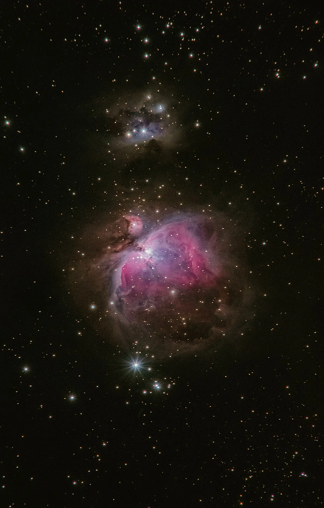

Botanical spirits distilled under open skies, guided by the constellations above
We distil only during specific stellar alignments — when atmospheric pressure and humidity create optimal botanical extraction. Our production calendar follows the sidereal year, not the calendar year.
All 48 botanicals in our signature gin are hand-foraged from within a 50-mile radius of the distillery. We employ two full-time botanical foragers who harvest at peak seasonal potency.
Each batch takes 24 hours from still loading to final cut. We run our copper pot still at less than half standard capacity to allow complete botanical integration at low, gentle heat.

Our botanical foragers harvest across the Highland landscape, working with seasonal calendars that align forage timing with peak essential oil concentration in each plant.
Botanicals macerate in our grain neutral spirit for 12–72 hours depending on the variety. The maceration room remains at a constant 8°C to preserve delicate volatile compounds.
Our 500-litre copper pot still runs for 24 hours at reduced heat. We make our cuts entirely by nose — no instruments, no timers. The distiller alone decides when the heart begins and ends.
We reduce with water from our own Highland spring to bottling strength. Each bottle is hand-filled, hand-labelled, and wax-dipped by our team.
Available in limited releases. Trade enquiries and private orders welcome.